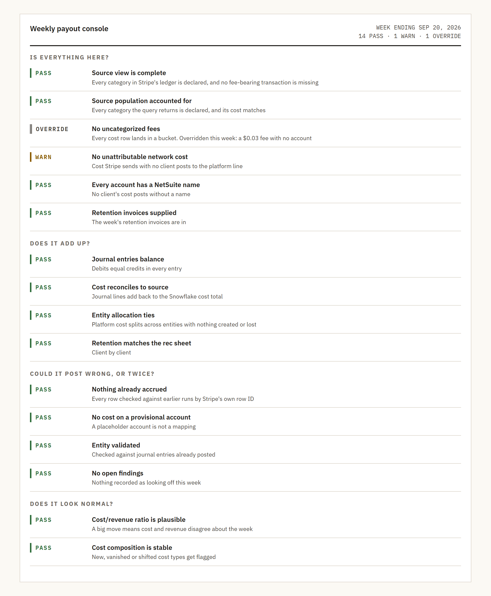
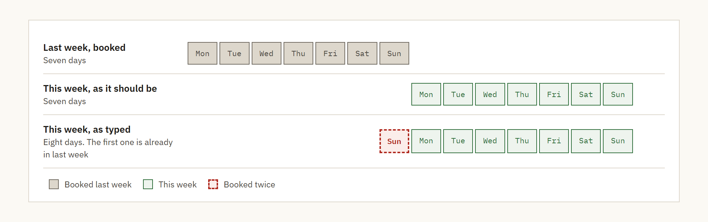

Deep dive · Stripe reconciliation
Inside the 16 checks
The console I built to replace KNIME runs 16 checks before it lets me export a journal entry. Most of them are checks I was still doing by hand every week, even with KNIME running. It's still in testing.
Why checks
KNIME got our weekly Stripe reconciliation from 4 hours a week, and 6 at month end, down to under 30 minutes. But I still checked the output by hand every week, because nothing in the run did those checks for me.
The hand-typed dates showed why that mattered. One booked week had an extra day in each week range, a day that had already been booked.
So when I specified the console, most of the checks I'd been doing in my head went into it, and now they run every time. There are 16, and it won't let me export until they've all run.
The 16 checks
I think of them as four questions. Each check answers one of them.
Is everything here?
Six checks make sure nothing is missing before anything gets added up.
- Source view is complete. Every category in Stripe's ledger is declared, and no transaction with a fee is missing from the detail.
- Source population accounted for. Every category the query returns is declared, and its cost matches what the query pulled.
- No uncategorized fees. Every cost row lands in a bucket. KNIME had a side branch for this.
- No unattributable network cost. Cost that can't be tied to a client gets flagged instead of guessed.
- Every account has a NetSuite name, so no client's cost posts without a name.
- Retention invoices supplied. Revenue and the net amount to pull both need that week's retention invoices from NetSuite.
Does it add up?
- Journal entries balance. Debits equal credits in every entry.
- Cost reconciles to source. The journal lines add up to the Snowflake cost total.
- Entity allocation ties. Splitting platform cost across entities doesn't create or lose anything.
- Retention matches the rec sheet, client by client.
Could it post wrong, or twice?
- Nothing already accrued. Every row is checked against earlier runs by Stripe's own row ID.
- No cost on a provisional account. An account marked pending is a placeholder waiting on a decision, and it shouldn't carry real cost.
- Entity validated against journal entries that were already posted.
- No open findings. If anyone recorded that something looked off that week, the check won't pass until it's cleared.
Does it look normal?
- Cost to revenue ratio is plausible. Cost and revenue are picked by different rules, so a big move means they disagree about which week something belongs to.
- Cost composition is stable. A new fee type, one that disappears or one that shifts a lot gets flagged.

One real week
The week ending September 20 is the one I have a full run for. 14 checks passed, 1 warned and 1 was overridden.
The warning was network cost that couldn't be tied to a client. Stripe doesn't send all of its fee data into Snowflake, so some fees can't reach a client at the line level. The console posts those to the platform line with no client name and warns me about it, instead of guessing.
The override was an uncategorized fee of $0.03. When a check gets overridden, the reason is written into the run log right next to the numbers it excused.
The reason on this one said to map the fee to an account. Writing that down doesn't map it, though. The fee stayed unmapped and unbooked, and that check will keep failing every week until the mapping gets added.
Replaying a week
Every run saves the exact data it used with a fingerprint, 581 rows for the week ending September 20. Snowflake keeps changing, so without that snapshot I couldn't go back to a week and get the same answer.
The same run checked 228,255 new rows against earlier runs by Stripe's row ID, and none of them had been accrued before.
To test the snapshot, Claude rebuilt the journal entries from it separately, client by client for each payout window, and compared them with the import file. 14 of 16 groups matched to the cent. The other two were the $0.03 fee with no account mapped and $0.01 of rounding.
The extra day
Run in parallel with the manual process, the console exposed an error in one week's booked entry. Hand-typed date windows had given each week range an extra day that was already booked. I flagged it and it got fixed.

Designed, not built yet
Two parts of the design aren't in the console yet. Both are in progress.
- Materiality thresholds that start unset. Until someone sets them, the tie-out comes back unassessed instead of passing, and unassessed blocks posting the same way a failure does. The idea is that a placeholder picked to make a demo look tidy turns into policy by accident.
- An approval step. Nothing posts until a person approves that run, and the approval records the state of every check at that moment.
Limits and what's next
- It's still in testing and not posting. The week ending September 20 matches what was booked.
- It writes import files. Posting straight into NetSuite is labeled a later phase and isn't built.
- An override excuses a check. It doesn't fix what the check found.
- Some Stripe fees can't reach a client, because Stripe doesn't send all of its fee data into Snowflake.
- Next are the thresholds and the approval step.
How these numbers are sourced
Parsed from the console itself: the 16 checks and what each one tests, from the console page with names and amounts replaced. From its run for the week ending September 20: 14 passed, 1 warned and 1 overridden, the override reason in the run log, the 581-row snapshot and its fingerprint, the 228,255 new rows and none already accrued, the six files and the posting phase that isn't built. The rebuild of 14 of 16 groups to the cent was recomputed by Claude from that run's snapshot.
From the design spec: the thresholds that start unset and block posting, and the approval step.
My own account: the 4 hours a week, 6 at month end, and under 30 minutes, that most of the checks were ones I still did by hand, that the console is in testing and matches what was booked, the fees that can't reach a client, the extra day and that the thresholds and approval step are only designed so far. Claude wrote the code.